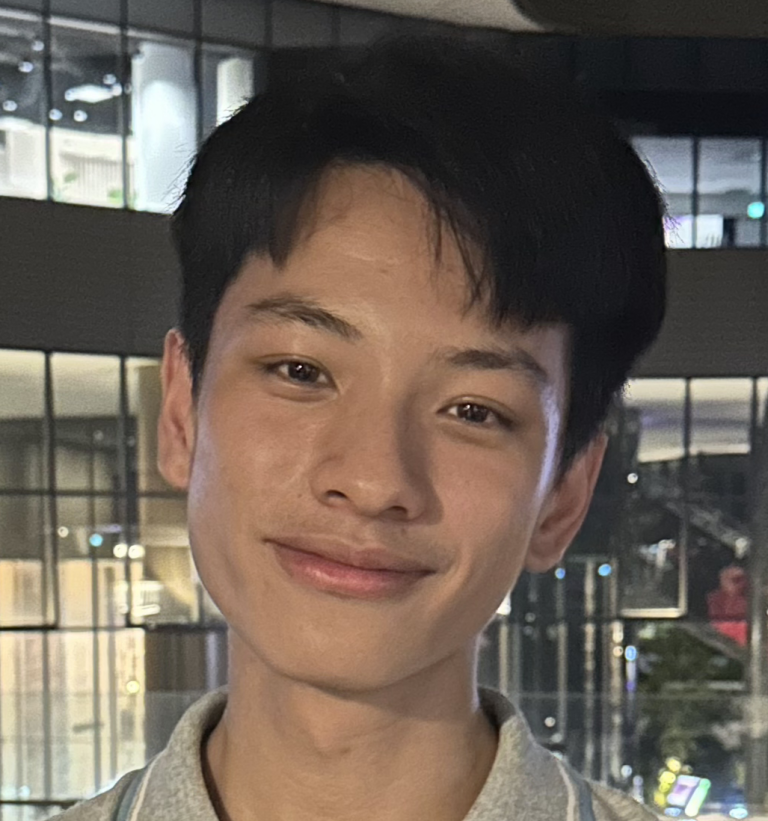
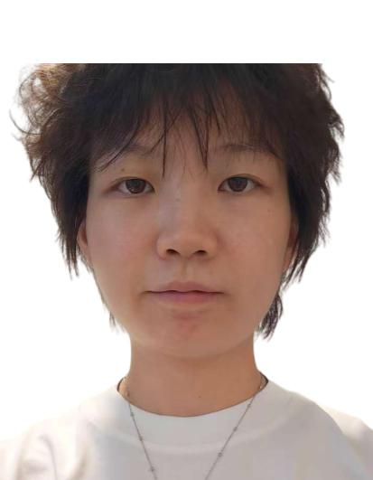
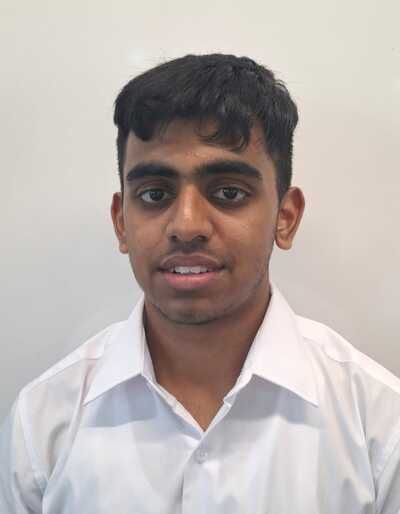

Jeriel Lee
Research AssistantMapped where leg patterning genes switch on during embryo and larval wing development in Bicyclus anynana butterflies.

JT'">Javen Tan
Research AssistantModeling how reaction-diffusion could pattern the wing veins of Bicyclus anynana.
Divya Singh
Research AttachmentButterfly wing culture, testing reaction-diffusion models in real tissue, and CRISPR-Cas9.
Huang Mengxuan
Graduate student (MSc)Built the Bicyclus Wing Atlas, a website for exploring gene expression in Bicyclus anynana wings that can also predict a wing's type and stage from a DAPI (nucleus stain) image.

TY'">Tingyu Yin
Graduate studentFinding the best light conditions for growing corn.

JV'">Jaya Vardhan Harihar Prasad
High school internDesigned and built a nanoliter-scale microinjector for CRISPR-Cas9 injection into embryos.
Chan Sum Ngai Jeff
High school internDesigned and built a nanoliter-scale microinjector for CRISPR-Cas9 injection into embryos.

Gianella Pacho
Undergraduate studentExploring FGF signaling in biological patterning using Bicyclus anynana.

Emily Zhang Linwan
Graduate studentSpatial transcriptomics of the developing Bicyclus anynana brain.
Zhang Yu
Graduate studentHow frizzled receptors work together in space to pattern butterfly wing tissue.
How Hong Chuen Shaun
Undergraduate studentShowed that vermilion and cinnabar make eye pigment, but not wing pigment, in Bicyclus anynana butterflies.

Lara Chal
Undergraduate studentDetecting several eyespot-center mRNAs and proteins together in larval wings of Bicyclus anynana.

Dorothy Lau Shi Min
Undergraduate studentThe role of EGFR signaling in patterning butterfly wings.

Jeff Winxin Collado
Undergraduate studentSet up an automated fluidics system for in situ hybridization in larval and adult zebrafish (Danio rerio) brains.

Teesha Basak
High school internDesigned a better automatic feeder for zebrafish behavior experiments.

Tirunagari Praveenya
Undergraduate summer internThe role of Homothorax (Hth) and Dachshund (Dac) in forming eyespot centers in Bicyclus anynana butterflies.

Lim Jun Hui Solomon
High school internReaction-diffusion modeling of butterfly wing patterns.

Isaac
High school internReaction-diffusion modeling of butterfly wing patterns.